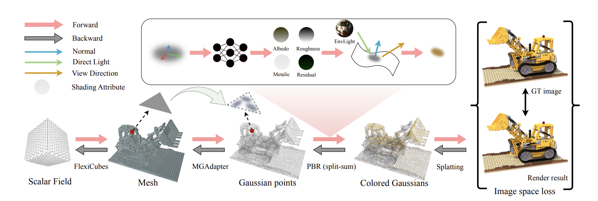
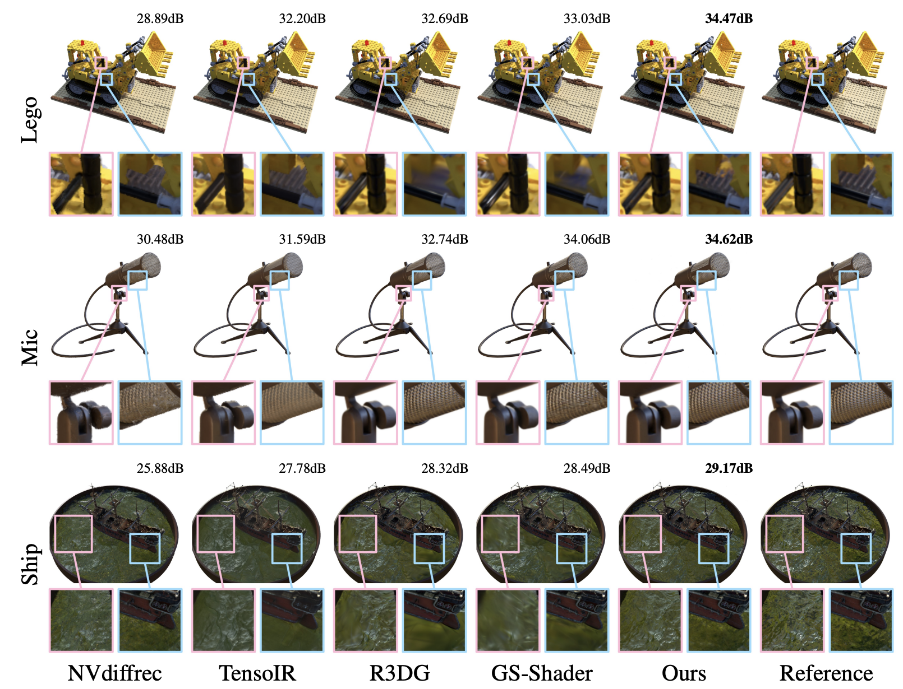
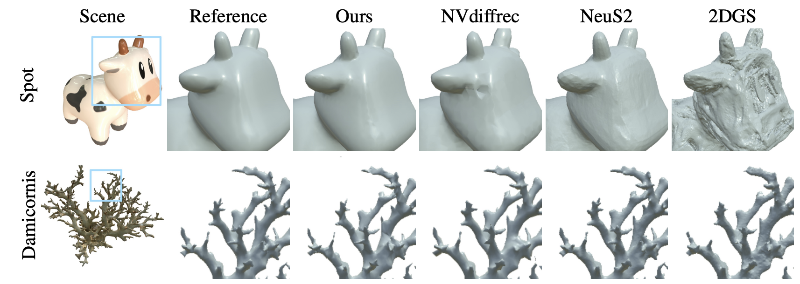
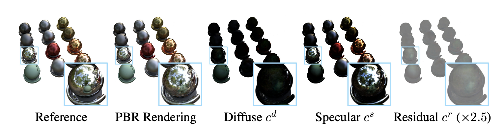
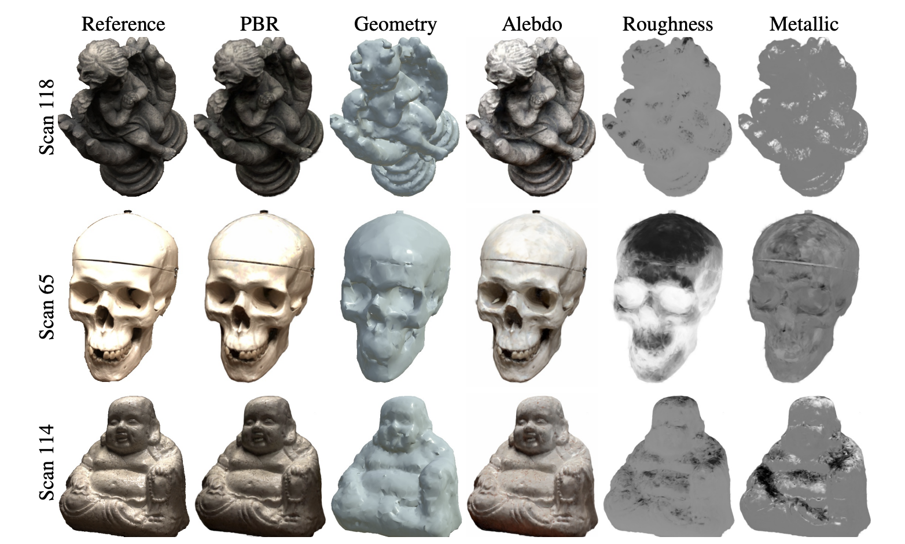
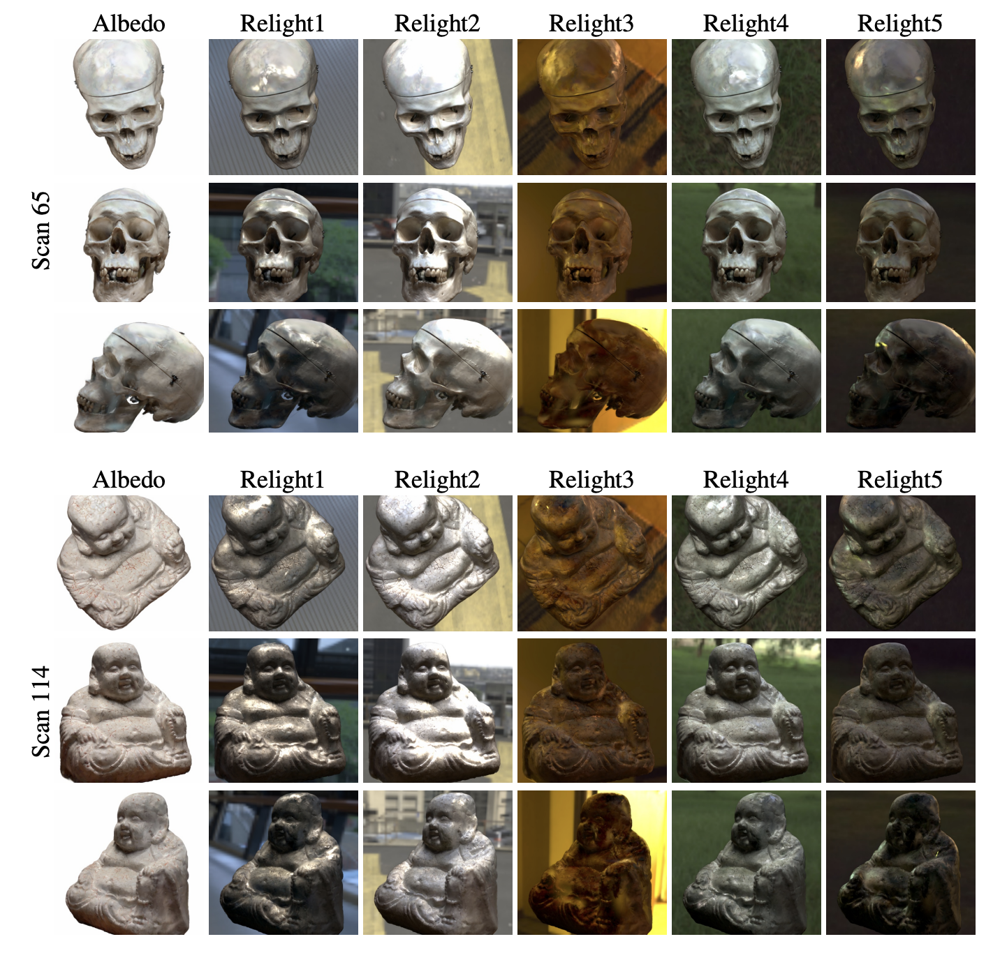

We consider the problem of physically-based inverse rendering using 3D Gaussian Splatting (3DGS) representations Kerbl et al. (2023b). While recent 3DGS methods have achieved remarkable results in novel view synthesis (NVS), accurately capturing high-fidelity geometry, physically interpretable materials and lighting remains challenging, as it requires precise geometry modeling to provide accurate surface normals, along with physically-based rendering (PBR) techniques to ensure correct material and lighting disentanglement.
Previous 3DGS methods resort to approximating surface normals, but often struggle with noisy local geometry, leading to inaccurate normal estimation and suboptimal material-lighting decomposition. In this paper, we introduce GeoSplatting, a novel hybrid representation that augments 3DGS with explicit geometric guidance and differentiable PBR equations. Specifically, we bridge isosurface and 3DGS together, where we first extract isosurface mesh from a scalar field, then convert it into 3DGS points and formulate PBR equations for them in a fully differentiable manner.
In GeoSplatting, 3DGS is grounded on the mesh geometry, enabling precise surface normal modeling, which facilitates the use of PBR frameworks for material decomposition. This approach further maintains the efficiency and quality of NVS from 3DGS while ensuring accurate geometry from the isosurface. Comprehensive evaluations across diverse datasets demonstrate the superiority of GeoSplatting, consistently outperforming existing methods both quantitatively and qualitatively.






@misc{ye2024geosplattinggeometryguidedgaussian,
title={GeoSplatting: Towards Geometry Guided Gaussian Splatting for Physically-based Inverse Rendering},
author={Kai Ye and Chong Gao and Guanbin Li and Wenzheng Chen and Baoquan Chen},
year={2024},
eprint={2410.24204},
archivePrefix={arXiv},
primaryClass={cs.CV},
url={https://arxiv.org/abs/2410.24204},
}